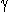
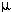
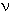
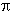
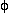
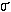

| Символ | Определение |
|---|---|
| Å | Ангстрем (10-10 м) |
| Bo | Статическое магнитное поле |
| B1 | Радиочастотное магнитное поле |
| C | Контраст |
| C | Электрическая емкость |
| COSY | 2-D коррелированная спектроскопия |
| CW | Непрерывная волна |
| D | Дейтерий |
| D | Коэффициент диффузии |
| | Химический сдвиг |
| | Ширина импульса градиента магнитного поля |
| Разделение импульсов градиента магнитного поля | |
| | Химический сдвиг |
| E | Энергия |
| f | Частота |
| FID | Затухание свободной индукции |
| FT | Преобразование Фурье |
| Gi | Градиент магнитного поля в направлении i |
|  | Гиромагнитное отношение |
| h | Постоянная Планка |
| H | Водород |
| IFT | Обратное преобразование Фурье |
| IM | Мнимая часть комплексного числа |
| J | Джоуль |
| J | Константа спин-спиновой связи |
| k | Постоянная Больцмана |
| k | кило (103) |
| k | Константа пропорциональности |
| K | Температура по Кельвину |
| L | Электрическая Индуктивность |
| m | милли (10-3) |
| M | мега (106) |
|  | микро (10-6) |
| Mo | Равновесное намагничивание |
| MX | X-компонента намагниченности |
| MX' | X'-компонента намагниченности |
| MY | Y-компонента намагниченности |
| MY' | Y'-компонента намагниченности |
| MZ | Z-компонента намагниченности |
| MXY | Поперечная составляющая намагниченности |
| MRI | Магнитно-резонансная томография |
|  | Резонансная частота в Герцах |
| N | Количество средних значений |
| N+ | Спиновая популяция в низкоэнергетическом состоянии |
| N- | Спиновая популяция в состоянии высокой энергии |
| NMR | Ядерный магнитный резонанс |
| Резонансная частота в радианах в секунду | |
| Ом, импеданс | |
|  | 3.14159... |
|  | Фазовый угол |
| ppm | Частей на миллион, или же млн.-1 |
| R1 | Скорость спин-решеточной релаксации |
| RE | Действительная часть комплексного числа |
| RF | Радиочастота |
| s | Второй |
|  | Константа химического экранирования |
| SAR | Удельная скорость поглощения |
| Sinc | Sin(x)/x |
| SNR | Отношение сигнал/шум |
| T | Температура |
| T | Тесла |
| T1 | Время спин-решеточной релаксации |
| T2 | Время спин-спиновой релаксации |
| T2* | T2-звезда |
| T2inhomo | Неоднородный T2 |
| Угол поворота | |
| TE | Время Эхо |
| TI | Время инверсии |
| TR | Время повторения |
| X | Ось X в лабораторной системе координат |
| X' | Вращающаяся ось X рамки |
| Y | Ось Y в лабораторной системе координат |
| Y' | Вращающаяся ось Y рамки |
| Z | Ось Z в лабораторной системе координат |
| 1-D | Одномерный |
| 2-D | Двумерный |
Авторские права © 1997-2017 JP Hornak.
Все права защищены.